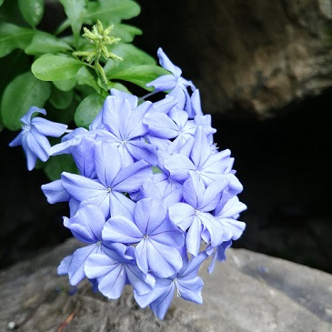
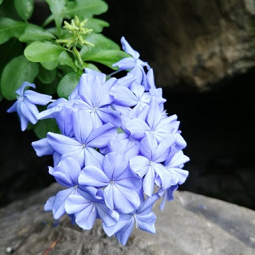
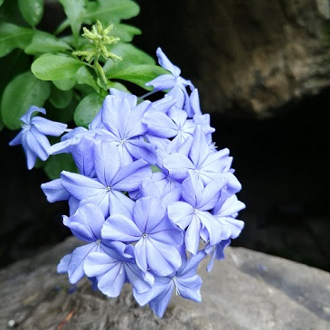

Gallery
In my spare time, I like to do some mobile photography as a side hobby. For anyone wondering, I work with an LG G6. Here are some of my photos. Enjoy!


 



In my spare time, I like to do some mobile photography as a side hobby. For anyone wondering, I work with an LG G6. Here are some of my photos. Enjoy!
